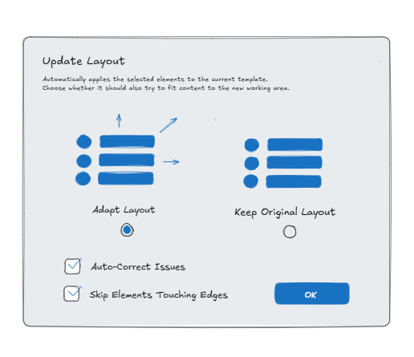
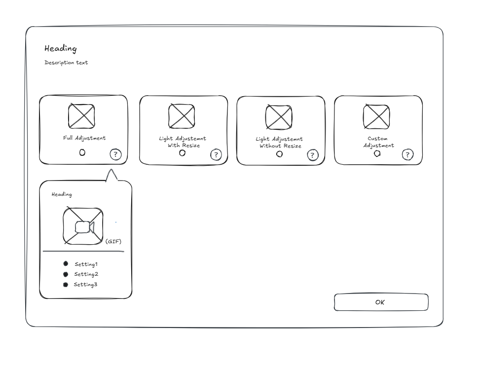
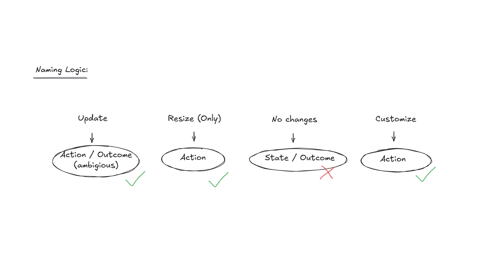
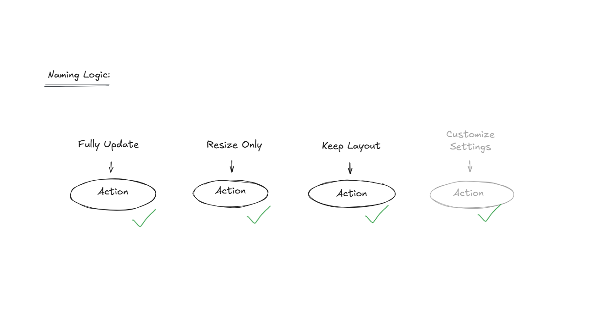
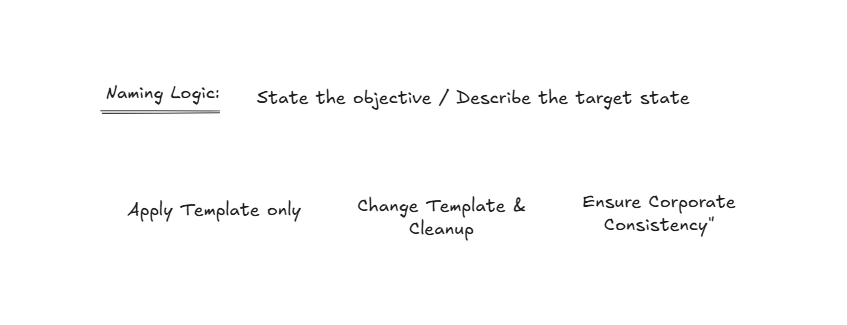
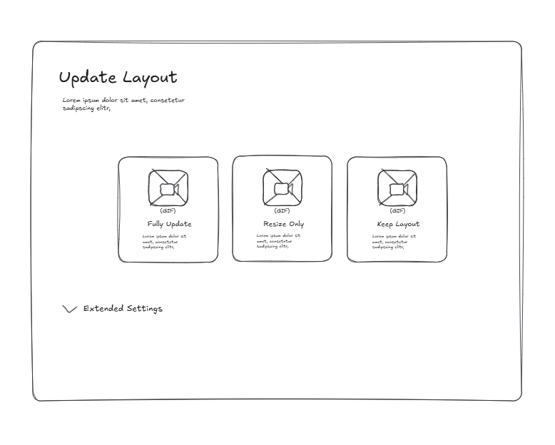
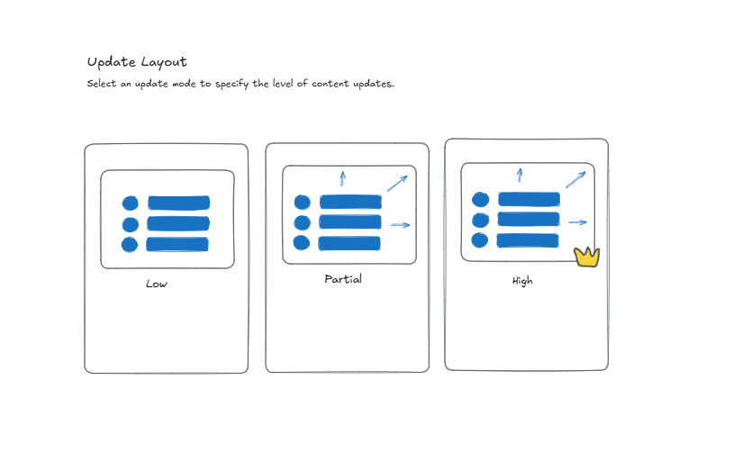
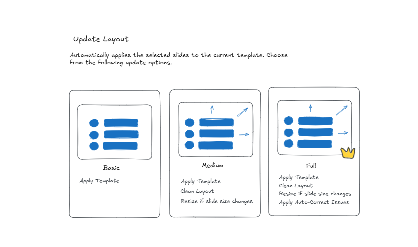
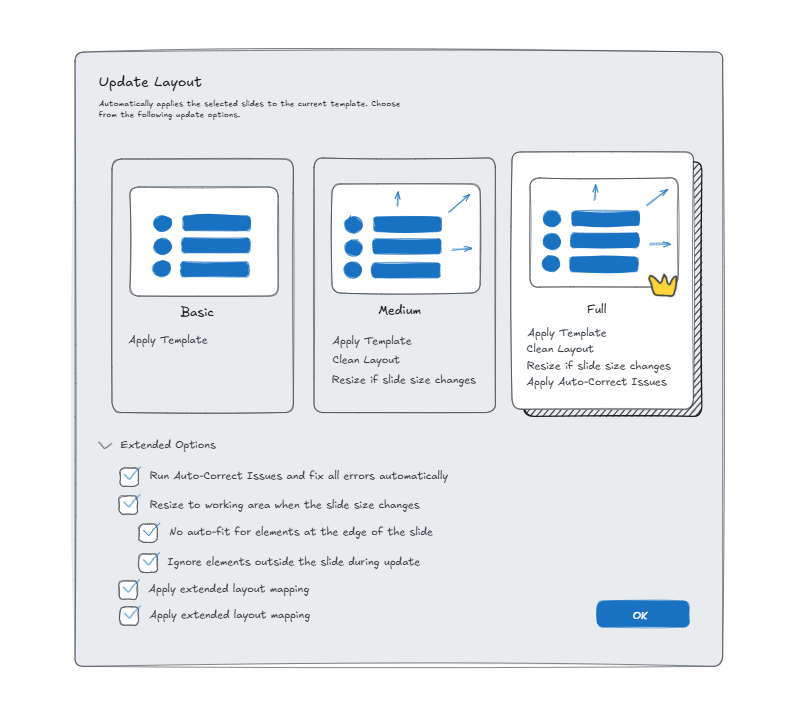

- Developed the terminology architecture through four iterations, moving from an action-based model to a preset model.
- Derived the collapse pattern from DeepL as a UI reference.
- Made the technical decision to use a ListBox instead of RadioButtons.
- Wrote and aligned the German UI copy.
- Carried out the redesign in direct coordination with an international partner company, from the first sketch to the XAML implementation.
The purpose of preset-based template selection
The product is a B2B add-in for a presentation software suite. Its template feature updates slides from an outdated corporate design to a new one, automatically adjusting layouts, fonts, and colors. The target audience: individual users and small teams without dedicated design resources.
All or Nothing: A Choice Without Guidance
The preset decision sat at a single dialog with no room for error correction. Getting it wrong meant manual rework, exactly the effort the feature was meant to eliminate. I identified two structural issues with the existing design:
The dialog offered no differentiation. Two unnamed options, no description of consequences, no way to judge which fit a given task.
The dialog didn't scale with the underlying logic. Four distinct preset scenarios existed technically, but the two-option UI couldn't represent that complexity without becoming a menu.

Ideation, Iteration, Implementation
The starting point for the redesign was the product decision to use tiles instead of radio buttons to represent the preset options. This idea didn't come from user research but from a marketing consideration, communicated via the CEO and a business partner. The task was to design what the tiles would communicate, how they would differ from each other, and what belonged in the expander — and then implement it in XAML.
The first sketch called for four tiles: "Full Adjustment", "Light Adjustment with resize", "Light Adjustment without resize", and "Custom Adjustment". The model was complete but too complex for a quick decision.

In this first attempt of replacing the "level-of-adjustment" naming logic with more action-based captions, three of out the four captions describe what the user does (action), one describes the result state, and "Update" itself is vague enough to describe both. This breaks Nielsen's "Consistency and Standards" heuristic (Nielsen Norman Group, 10 Usability Heuristics for User Interface Design, 1994).

The second iteration called for three tiles: "Full Update", "Resize Only", "Keep Layout".

The next iteration shifted towards a goal-oriented perspective: "Apply Template only / Change Template & Cleanup / Ensure Corporate Consistency". It was conceptually a step forward, but too abstract and too close to marketing language.

Two variants were developed for the hidden settings: tab navigation and an expander. Tabs were discarded early on, since they suggest equally weighted alternatives. An expander signals: these options exist, but you probably don't need them. The reference was DeepL, whose interface hides rarely used options in a similar way.

Iteration 3 tried a spectrum: "Low / Partial / High". The user has to calibrate for themselves what "Partial" means for their content.

Iteration 4 replaced the spectrum with presets: "Basic / Medium / Full". The user trusts a curated preselection instead of calibrating it themselves. The final naming was finalized in coordination with the product team.

The final UI
Feedback from the user test before launch
The prototype was approved internally. The final version carries the structural principle of the design: three named escalation levels with an expander for advanced options. The XAML implementation was a shared effort: window infrastructure was handled by development, while UI content, icons as DataTemplates, layout, and styles were implemented independently.

To my knowledge, no formal usability tests were conducted. The result is supported qualitatively: positive sign-off internally and from sales, with the feature in production since release.